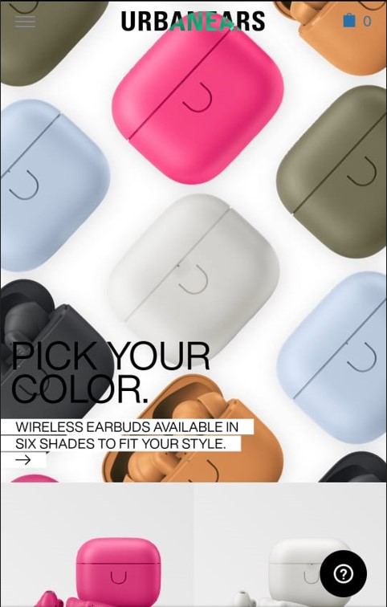

White Space
Julien Joly Architecture
Julien Joly Architecture utilized white space in a beautiful way for a clean design to balance the images, text, and visuals.
White space is one of the basic design principle, and clear design is uncluttered, simple, and easy. Clear design features minimal use of decoration and focuses on color, layout, and typography. Overall white space and clear design delivers visual appearance, and helps to understand and convey the intended message to the audience.
Contrast
Urbanears
Urbanears is an ecommerce website allowing shoppers to shop by color, even though it is not sophisticated experience for shoppers but product image creates a bold aesthetic to shopper.
Contrast design principle is utiliziation of visual elements to capture the attention. Contrast can guide the viewer's eye to highlight the important information and adds variety, a story to a design
Rule of Thirds
Brigham Young University - Idaho
The image displays the Rule of Thirds as the focal point (women seeing) to the right towards the text which is to the right.
Rule of thirds is a simple grid which divides the overlay equally into thirds, both vertical and horizontal on the space to be utilized for design.